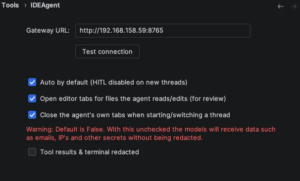
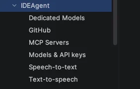
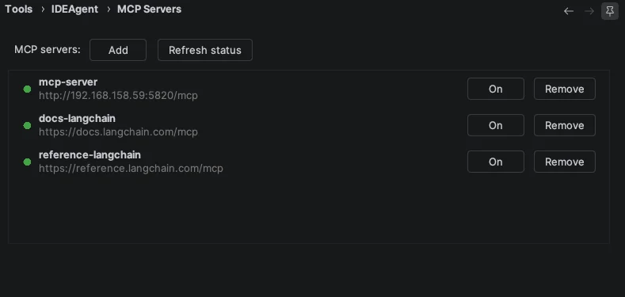
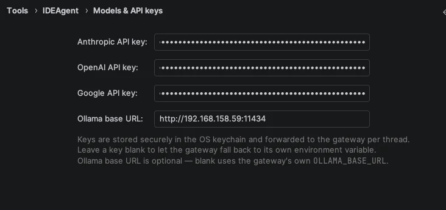
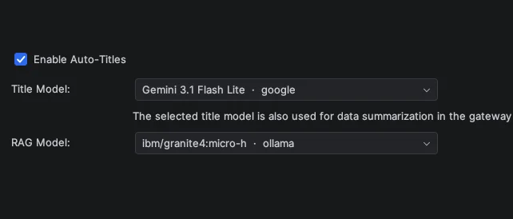
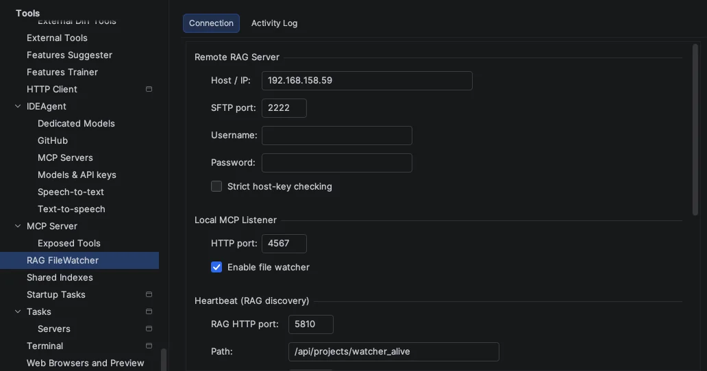
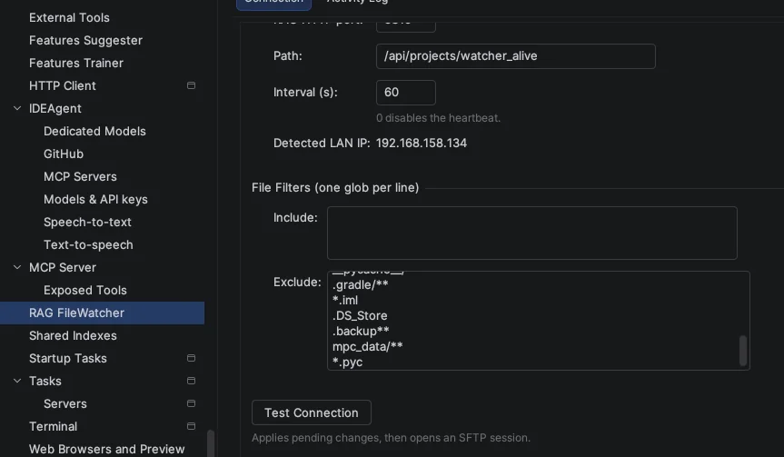
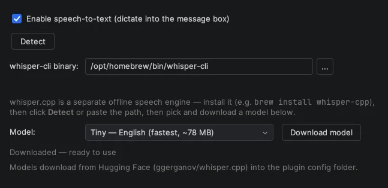
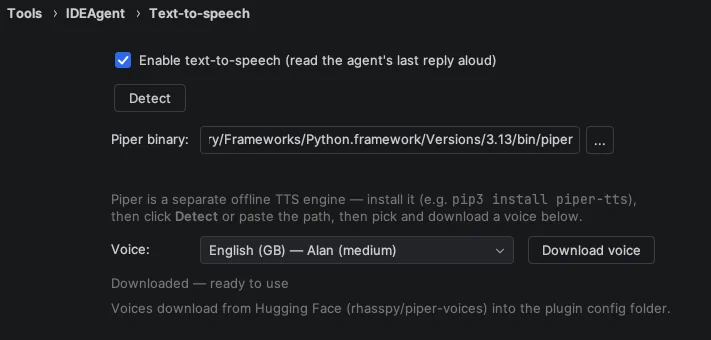

The plugin is the face of the whole system — a native PyCharm / IntelliJ tool window that turns your IDE into an agentic coding surface. It runs no model itself: it connects to your own Gateway, streams the agent's work back into the editor, and keeps you in control. This page walks through how to set it up from its Settings panels.
New here? Follow the 5-minute quick setup →
Available on the JetBrains Marketplace — install directly into PyCharm / IntelliJ.
IDEAgent installs as a tool window with four tabs — running entirely against infrastructure you own:
Each thread carries an Auto switch that controls human-in-the-loop (HITL): Auto off means HITL is enabled, so the agent pauses for your approval before consequential actions; Auto on means HITL is disabled, so it proceeds without pausing for individual approvals. You decide per thread whether consequential actions require approval.
A small set of high-risk shell commands is always gated, though: git,
sudo and docker commands still pause for your approval even when Auto
is on. This safeguard can't be turned off from the Auto switch — those
commands are simply too consequential to run unattended.
This step-by-step video tutorial walks through how to set up the complete IDEAgent suite on a resource-constrained machine — demonstrated on a MacBook Air (Late 2018, Intel Core i5, 3.7 GB RAM). It covers the onboarding phase, initial configuration, and demonstrates how all parts of the system interact in real time.
Everything below lives under the plugin's Settings panel — no files to edit. Each section maps to one screen you fill in once.


MCP servers are the tools the agent may call through the Gateway — the context engine, RAG search and project memory. Add your local server, toggle it on, and refresh to confirm it is reachable.

IDEAgent works with the provider you choose — OpenAI,
Anthropic, Google or a fully local Ollama
endpoint. The Models & API keys settings page is where you enter the key
for each cloud provider you want to use and point the plugin at your Ollama server. Your keys
are stored in your machine's OS keychain (via IntelliJ's
PasswordSafe) — never in plaintext config and never baked into the plugin — and
are forwarded to the Gateway per thread. The gateway receives the
selected key transiently for that request, does not persist it, and only sends credentials onward
to the provider you selected. Leave the cloud keys blank and set only the Ollama base URL to run
completely offline.

OLLAMA_BASE_URL.Beyond the main coding model, a couple of small helper models keep the experience smooth — auto-generating thread titles and powering RAG retrieval. A compact model (local via Ollama, or one of your configured providers) is enough for both.

The RAG file watcher lives inside the plugin. It keeps your project index in sync with the RAG server so the agent always retrieves the current state of your code. Connect it to your machines, then let it index.


Voice input is optional and fully local. It uses Whisper, which must be installed on the machine running the plugin — the plugin then detects the binary.
brew install whisper-cpp).
Voice output uses Piper, also installed locally and detected by the plugin.
pip3 install piper-tts).
The plugin sends no product-usage telemetry back to us — no analytics, no usage tracking, no phone-home — and neither does the rest of the stack (gateway, MCP server, RAG server). It talks only to the gateway you configure, default localhost.